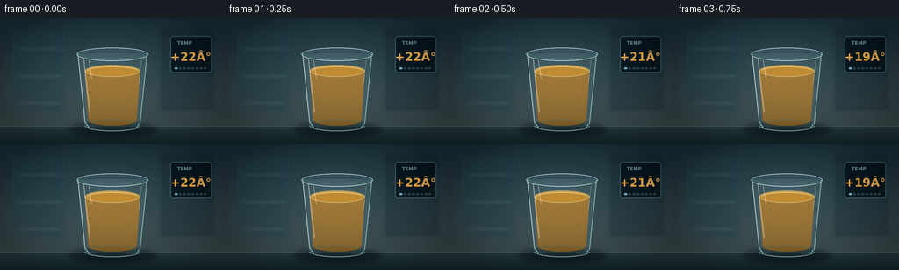
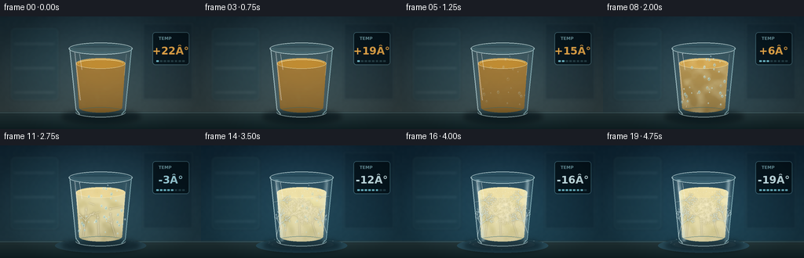

CODING AGENTS AS PIXEL WORLD MODELS
traex/GPT-5.6-Sol · phygen_094
点击播放 · 原生 RGB 像素
逐轮保存的候选
回放视频、检查图与代码变化。
每份候选均可单独播放。实际图片检查记录在下方工具轨迹中。
候选 01播放与检查图
点击播放 · 原生 RGB 像素


展开代码变化
--- 上一保存版本
+++ 本次保存版本
@@ -0,0 +1,354 @@
+from pathlib import Path
+import math
+import numpy as np
+from PIL import Image, ImageDraw, ImageFont, ImageFilter
+import artifact_io
+
+# Deterministic procedural rendering. The scene is drawn at 3x resolution
+# and downsampled for smooth glass edges and fine frost detail.
+W, H, N, SCALE = 256, 144, 20, 3
+RW, RH = W * SCALE, H * SCALE
+ROOT = Path(__file__).resolve().parent
+rng = np.random.default_rng(9401)
+
+
+def ss(v):
+ return int(round(v * SCALE))
+
+
+def xy(points):
+ return [(ss(x), ss(y)) for x, y in points]
+
+
+def box(x0, y0, x1, y1):
+ return (ss(x0), ss(y0), ss(x1), ss(y1))
+
+
+def smoothstep(a, b, x):
+ if a == b:
+ return float(x >= b)
+ t = np.clip((x - a) / (b - a), 0.0, 1.0)
+ return float(t * t * (3.0 - 2.0 * t))
+
+
+def font(size, bold=False):
+ name = "DejaVuSans-Bold.ttf" if bold else "DejaVuSans.ttf"
+ paths = [Path("/usr/share/fonts/truetype/dejavu") / name,
+ Path("/usr/share/fonts/dejavu") / name]
+ for p in paths:
+ if p.exists():
+ return ImageFont.truetype(str(p), ss(size))
+ return ImageFont.load_default()
+
+
+# Soft, stationary material textures keep the timelapse coherent.
+def soft_noise(seed, coarse=(28, 16), blur=2.2):
+ rr = np.random.default_rng(seed)
+ a = (rr.random((coarse[1], coarse[0])) * 255).astype(np.uint8)
+ im = Image.fromarray(a, "L").resize((RW, RH), Image.Resampling.BICUBIC)
+ return np.asarray(im.filter(ImageFilter.GaussianBlur(ss(blur))), dtype=np.float32) / 255.0
+
+cloud_noise = soft_noise(21, (30, 18), 1.2)
+fine_noise = soft_noise(22, (80, 45), 0.45)
+frost_noise = soft_noise(23, (38, 22), 0.8)
+
+# Fixed condensation bead positions.
+beads = []
+for _ in range(36):
+ y = rng.uniform(47, 116)
+ half = 37 - (y - 42) * 0.085
+ x = 128 + rng.uniform(-half, half)
+ r = rng.uniform(0.45, 1.45)
+ phase = rng.uniform(0, 1)
+ beads.append((x, y, r, phase))
+
+
+def make_tree_segments(seed, start, angle, length, depth=4, birth=0.0):
+ """Return deterministic branching crystal segments with growth timestamps."""
+ rr = np.random.default_rng(seed)
+ segs = []
+ def rec(x, y, ang, ln, dep, born):
+ if dep <= 0 or ln < 2.0:
+ return
+ bend = rr.uniform(-0.10, 0.10)
+ ex = x + math.cos(ang + bend) * ln
+ ey = y + math.sin(ang + bend) * ln
+ death = min(1.0, born + 0.13 + 0.025 * dep)
+ segs.append((x, y, ex, ey, born, death, dep))
+ if dep > 1:
+ # Continue the trunk and grow symmetric needle-like side branches.
+ rec(ex, ey, ang + rr.uniform(-0.16, 0.16), ln * 0.70, dep - 1, death - 0.015)
+ for sign in (-1, 1):
+ rec(ex, ey, ang + sign * rr.uniform(0.62, 0.90),
+ ln * rr.uniform(0.42, 0.58), dep - 1, death + 0.02)
+ rec(start[0], start[1], angle, length, depth, birth)
+ return segs
+
+# Internal crystal colonies, spreading from colder wall and bottom contact points.
+crystal_segments = []
+crystal_segments += make_tree_segments(101, (106, 116), -1.52, 20, 5, 0.00)
+crystal_segments += make_tree_segments(102, (147, 117), -1.78, 18, 5, 0.08)
+crystal_segments += make_tree_segments(103, (99, 92), -0.18, 19, 4, 0.18)
+crystal_segments += make_tree_segments(104, (157, 78), 2.90, 17, 4, 0.28)
+crystal_segments += make_tree_segments(105, (126, 116), -1.66, 24, 5, 0.22)
+crystal_segments += make_tree_segments(106, (113, 73), 0.25, 16, 4, 0.42)
+
+# Sparse frost filaments on the outside of the tumbler.
+frost_segments = []
+frost_segments += make_tree_segments(301, (96, 116), -1.30, 16, 4, 0.05)
+frost_segments += make_tree_segments(302, (160, 112), -1.95, 16, 4, 0.17)
+frost_segments += make_tree_segments(303, (93, 72), -0.10, 12, 3, 0.28)
+frost_segments += make_tree_segments(304, (163, 65), 3.05, 11, 3, 0.38)
+
+
+def draw_segments(size, segments, growth, color, width=0.7, glow=False):
+ layer = Image.new("RGBA", size, (0, 0, 0, 0))
+ d = ImageDraw.Draw(layer)
+ for x0, y0, x1, y1, born, death, dep in segments:
+ if growth <= born:
+ continue
+ q = np.clip((growth - born) / max(0.001, death - born), 0, 1)
+ q = q * q * (3 - 2 * q)
+ xe, ye = x0 + (x1 - x0) * q, y0 + (y1 - y0) * q
+ alpha = int(color[3] * (0.72 + 0.07 * dep))
+ d.line(xy([(x0, y0), (xe, ye)]), fill=(*color[:3], min(255, alpha)),
+ width=max(1, ss(width * (0.65 + 0.09 * dep))))
+ if q > 0.86:
+ rr = 0.45 + dep * 0.055
+ d.ellipse(box(xe-rr, ye-rr, xe+rr, ye+rr), fill=(*color[:3], min(255, alpha)))
+ if glow:
+ halo = layer.filter(ImageFilter.GaussianBlur(ss(0.9)))
+ layer = Image.alpha_composite(halo, layer)
+ return layer
+
+
+def clip_alpha(layer, mask):
+ a = np.asarray(layer.getchannel("A"), dtype=np.uint16)
+ m = np.asarray(mask, dtype=np.uint16)
+ layer.putalpha(Image.fromarray(((a * m) // 255).astype(np.uint8), "L"))
+ return layer
+
+
+def render_frame(i):
+ t = i / (N - 1)
+ # Cooling is slightly accelerated early, as expected in a timelapse.
+ cool = smoothstep(0.00, 1.00, t)
+ temp = 22.0 - 41.0 * cool
+
+ # --- Cold-room background, with fixed camera and shallow visual depth ---
+ yy, xx = np.mgrid[0:RH, 0:RW]
+ nx, ny = xx / RW, yy / RH
+ coldness = smoothstep(0.05, 0.92, cool)
+ top = np.array([22, 43, 54], np.float32) * (1-coldness) + np.array([12, 38, 56]) * coldness
+ bot = np.array([64, 79, 80], np.float32) * (1-coldness) + np.array([28, 67, 84]) * coldness
+ grad = top[None,None,:] * (1-ny[...,None]) + bot[None,None,:] * ny[...,None]
+ # Cool central glow and restrained texture.
+ glow = np.exp(-(((nx-.48)/.46)**2 + ((ny-.39)/.55)**2))
+ grad += glow[...,None] * np.array([13, 18, 18])[None,None,:]
+ grad += (fine_noise[...,None] - .5) * 2.3
+ arr = np.clip(grad, 0, 255).astype(np.uint8)
+ base = Image.fromarray(arr, "RGB").convert("RGBA")
+
+ # Defocused freezer structure in the rear.
+ bg = Image.new("RGBA", (RW, RH), (0,0,0,0)); d = ImageDraw.Draw(bg)
+ d.rounded_rectangle(box(13, 14, 75, 108), radius=ss(6), fill=(31,67,79,74), outline=(111,163,173,38), width=ss(1))
+ for yline in (35, 66, 97):
+ d.line(xy([(18,yline),(69,yline)]), fill=(158,198,204,24), width=ss(1))
+ d.rectangle(box(181, 8, 246, 107), fill=(7,26,39,58), outline=(114,157,171,28), width=ss(1))
+ bg = bg.filter(ImageFilter.GaussianBlur(ss(1.4)))
+ base = Image.alpha_composite(base, bg)
+
+ # Stainless cold shelf.
+ shelf = Image.new("RGBA", (RW, RH), (0,0,0,0)); sd = ImageDraw.Draw(shelf)
+ sd.rectangle(box(0,122,256,144), fill=(34,64,72,255))
+ for yv in range(ss(122), RH):
+ rel = (yv/ SCALE - 122) / 22
+ col = int(68 - rel*25)
+ sd.line([(0,yv),(RW,yv)], fill=(col-25,col-4,col,255), width=1)
+ sd.line(xy([(0,123),(256,123)]), fill=(133,178,184,80), width=ss(1))
+ # Frost bloom across shelf late in the sequence.
+ ice = smoothstep(.50, .98, cool)
+ if ice > 0:
+ sd.ellipse(box(70,119,186,137), fill=(164,211,218,int(28*ice)))
+ sd.ellipse(box(88,121,169,132), fill=(211,238,238,int(42*ice)))
+ for k in range(26):
+ ang = k * 2.399
+ rr = 22 + (k % 7) * 5.1
+ cx = 128 + math.cos(ang)*rr
+ cy = 126 + math.sin(ang)*rr*.15
+ r = .35 + (k%3)*.22
+ sd.ellipse(box(cx-r,cy-r*.45,cx+r,cy+r*.45), fill=(213,242,243,int(85*ice)))
+ base = Image.alpha_composite(base, shelf)
+
+ # Grounded glass shadow and cold reflection.
+ shade = Image.new("RGBA", (RW,RH), (0,0,0,0)); sh = ImageDraw.Draw(shade)
+ sh.ellipse(box(78,119,179,137), fill=(0,13,20,125))
+ sh.ellipse(box(97,123,160,131), fill=(1,10,14,155))
+ shade = shade.filter(ImageFilter.GaussianBlur(ss(3.0)))
+ base = Image.alpha_composite(base, shade)
+
+ # Temperature display: a visual cue that makes the large drop unambiguous.
+ panel = Image.new("RGBA", (RW,RH), (0,0,0,0)); pd = ImageDraw.Draw(panel)
+ pd.rounded_rectangle(box(194,20,241,62), radius=ss(4), fill=(4,19,27,218), outline=(103,158,171,105), width=ss(1))
+ pd.text((ss(202),ss(25)), "TEMP", font=font(5.5, True), fill=(135,187,196,210))
+ label = f"{temp:+.0f}°"
+ fnt = font(13.5, True)
+ bb = pd.textbbox((0,0), label, font=fnt)
+ tw = bb[2]-bb[0]
+ digit_col = (255,184,79,245) if temp > 4 else ((170,226,239,250) if temp > -8 else (216,246,252,250))
+ pd.text((ss(217.5)-tw//2,ss(36)), label, font=fnt, fill=digit_col)
+ # Tiny cooling progress pips.
+ for k in range(8):
+ col = (132,221,238,210) if k/7 <= cool else (47,78,86,150)
+ pd.rounded_rectangle(box(199+k*4.7,56,202+k*4.7,58), radius=ss(.7), fill=col)
+ base = Image.alpha_composite(base, panel)
+
+ # Masks for the tumbler and its contents.
+ glass_mask = Image.new("L", (RW,RH), 0); gm = ImageDraw.Draw(glass_mask)
+ gm.polygon(xy([(88,40),(168,40),(160,120),(155,125),(101,125),(96,120)]), fill=255)
+ gm.ellipse(box(96,116,160,129), fill=255)
+ oil_mask = Image.new("L", (RW,RH), 0); om = ImageDraw.Draw(oil_mask)
+ om.polygon(xy([(96.5,60),(159.5,60),(155.3,117),(151.5,120),(104.5,120),(100.7,117)]), fill=255)
+ om.ellipse(box(96.5,53.5,159.5,66.5), fill=255)
+ om.ellipse(box(101,111,155,122.5), fill=255)
+
+ # Transparent glass body tint (drawn behind contents).
+ glassback = Image.new("RGBA", (RW,RH), (0,0,0,0)); gd = ImageDraw.Draw(glassback)
+ gd.polygon(xy([(88,40),(168,40),(160,120),(155,125),(101,125),(96,120)]), fill=(173,218,225,30))
+ gd.ellipse(box(96,116,160,129), fill=(115,183,195,25))
+ base = Image.alpha_composite(base, glassback)
+
+ # --- Oil transformation ---
+ cloud = smoothstep(.16, .76, cool)
+ solid = smoothstep(.58, .98, cool)
+ # Initial rich amber shifts to pale, opaque fat crystals.
+ c0 = np.array([202,126,22], float)
+ c1 = np.array([226,213,147], float)
+ oil_col = c0*(1-cloud) + c1*cloud
+ oy = np.clip((yy/ SCALE - 56) / 66, 0, 1)
+ illum = 1.10 - .22*oy + .05*np.sin((xx/RW)*math.pi)
+ oil_rgb = oil_col[None,None,:] * illum[...,None]
+ # Early oil is transparent; clouding and solidification increase opacity.
+ spatial_cloud = np.clip((cloud - .12) * 1.35 + (cloud_noise-.50)*.72 + (1-oy)*.08, 0, 1)
+ oil_rgb = oil_rgb*(1-spatial_cloud[...,None]*.18) + np.array([238,228,177])[None,None,:]*spatial_cloud[...,None]*.18
+ oa = 150 + 70*cloud + 25*solid
+ alpha = np.asarray(oil_mask,dtype=np.float32)/255.0 * oa
+ oil_arr = np.dstack([np.clip(oil_rgb,0,255), np.clip(alpha,0,255)]).astype(np.uint8)
+ oil_layer = Image.fromarray(oil_arr,"RGBA")
+ base = Image.alpha_composite(base, oil_layer)
+
+ # Interior cloud patches coalesce over time, preserving visible progression.
+ if cloud > .01:
+ cloud_alpha = np.clip((cloud*.95 + (cloud_noise-.54)*1.45 + (fine_noise-.5)*.16),0,1)
+ cloud_alpha *= np.asarray(oil_mask,dtype=np.float32)/255.0
+ ca = (cloud_alpha * (45 + 105*cloud)).astype(np.uint8)
+ crgb = np.zeros((RH,RW,4),dtype=np.uint8)
+ crgb[...,:3] = [244,235,194]
+ crgb[...,3] = ca
+ base = Image.alpha_composite(base,Image.fromarray(crgb,"RGBA"))
+
+ # Wax/fat crystal needles become visible, then embed in the cloudy mass.
+ crystal_grow = smoothstep(.30,.91,cool)
+ if crystal_grow > 0:
+ cryst = draw_segments((RW,RH), crystal_segments, crystal_grow,
+ (255,246,210,145 if solid < .65 else 105), .72, True)
+ cryst = clip_alpha(cryst, oil_mask)
+ base = Image.alpha_composite(base,cryst)
+
+ # Fine granulation in the final semi-solid oil.
+ if solid > .02:
+ gran = Image.new("RGBA",(RW,RH),(0,0,0,0)); gr = ImageDraw.Draw(gran)
+ rr = np.random.default_rng(770)
+ for k in range(130):
+ gx, gy = rr.uniform(101,156), rr.uniform(61,118)
+ half = 31 - max(0,gy-60)*.07
+ if abs(gx-128) > half: continue
+ rad = rr.uniform(.18,.55)
+ a = int((22+rr.uniform(0,30))*solid)
+ col = (255,247,216,a) if k%3 else (167,151,103,a)
+ gr.ellipse(box(gx-rad,gy-rad,gx+rad,gy+rad),fill=col)
+ gran = clip_alpha(gran,oil_mask)
+ base = Image.alpha_composite(base,gran)
+
+ # Meniscus: glossy while liquid, rough matte rim after solidification.
+ surface = Image.new("RGBA",(RW,RH),(0,0,0,0)); su = ImageDraw.Draw(surface)
+ surf_col = tuple(int(v) for v in (np.array([238,167,45])*(1-cloud)+np.array([239,224,166])*cloud))
+ su.ellipse(box(96.5,53.5,159.5,66.5), fill=(*surf_col,int(105+95*cloud)), outline=(255,238,181,int(155-30*solid)), width=ss(.7))
+ su.arc(box(99,55,157,65), 184, 356, fill=(255,239,174,int(170*(1-solid)+70)), width=ss(.65))
+ if solid > 0:
+ for k in range(15):
+ sx = 101 + k*3.8
+ sy = 59.5 + math.sin(k*2.2)*1.2
+ r=.25+(k%3)*.11
+ su.ellipse(box(sx-r,sy-r,sx+r,sy+r), fill=(255,249,220,int(130*solid)))
+ base = Image.alpha_composite(base,surface)
+
+ # Condensation beads: appear during chilling, then get swallowed by frost.
+ condensation = smoothstep(.09,.34,cool)*(1-smoothstep(.67,.97,cool))
+ drops = Image.new("RGBA",(RW,RH),(0,0,0,0)); dd=ImageDraw.Draw(drops)
+ if condensation > .01:
+ for bx,by,br,phase in beads:
+ appear = smoothstep(phase*.35, phase*.35+.20, cool)
+ a=int(125*condensation*appear)
+ if a<=0: continue
+ dd.ellipse(box(bx-br,by-br*1.35,bx+br,by+br*1.35), fill=(134,193,204,a), outline=(225,250,251,min(220,a+45)), width=max(1,ss(.3)))
+ dd.ellipse(box(bx-br*.38,by-br*.75,bx,by-br*.2), fill=(255,255,255,min(220,a+70)))
+ base=Image.alpha_composite(base,drops)
+
+ # Frost flowers spread along the cold outer wall late in the sequence.
+ frost = smoothstep(.55,.99,cool)
+ if frost > .005:
+ fr = draw_segments((RW,RH),frost_segments,frost,(224,250,253,155),.62,True)
+ fr=clip_alpha(fr,glass_mask)
+ base=Image.alpha_composite(base,fr)
+ # Powdery frost follows both side walls, not the center.
+ fa=np.zeros((RH,RW),dtype=np.float32)
+ X=xx/SCALE; Y=yy/SCALE
+ left=96+(Y-42)*.085; right=160-(Y-42)*.045
+ edge=np.maximum(np.exp(-((X-left)/2.6)**2),np.exp(-((X-right)/2.7)**2))
+ region=((Y>43)&(Y<123)).astype(float)
+ fa=np.clip(edge*region*(.35+.65*frost_noise)*frost*135,0,150).astype(np.uint8)
+ frost_rgba=np.zeros((RH,RW,4),dtype=np.uint8); frost_rgba[...,:3]=[219,245,248]; frost_rgba[...,3]=fa
+ fl=Image.fromarray(frost_rgba,"RGBA"); fl=clip_alpha(fl,glass_mask)
+ base=Image.alpha_composite(base,fl)
+
+ # Crisp tumbler contours and characteristic specular highlights, drawn last.
+ rim = Image.new("RGBA",(RW,RH),(0,0,0,0)); rd=ImageDraw.Draw(rim)
+ rd.ellipse(box(87.5,33.5,168.5,48.5), fill=(128,190,201,22), outline=(220,247,249,175), width=ss(1.05))
+ rd.ellipse(box(91,36,165,46), outline=(81,141,155,125), width=ss(.7))
+ rd.line(xy([(88.5,41),(96.5,119),(101.5,125)]),fill=(220,250,252,170),width=ss(1.05))
+ rd.line(xy([(167.5,41),(159.5,120),(154.5,125)]),fill=(182,230,236,155),width=ss(1.0))
+ rd.arc(box(96,116,160,129),4,176,fill=(219,247,248,150),width=ss(.85))
+ rd.arc(box(96,116,160,129),180,354,fill=(50,110,124,145),width=ss(.75))
+ # Long soft highlights curve down the real glass.
+ rd.line(xy([(95,46),(99,82),(102,107)]),fill=(255,255,255,92),width=ss(1.2))
+ rd.line(xy([(101,48),(104,68)]),fill=(255,255,255,135),width=ss(.65))
+ rd.line(xy([(160.5,48),(158,75)]),fill=(242,255,255,66),width=ss(.55))
+ base=Image.alpha_composite(base,rim)
+
+ # A few curls of frigid air appear only near the final frozen state.
+ vapor=smoothstep(.70,1.0,cool)
+ if vapor>0:
+ va=Image.new("RGBA",(RW,RH),(0,0,0,0)); vd=ImageDraw.Draw(va)
+ for k in range(3):
+ pts=[]
+ for j in range(19):
+ yy0=32-j*2.1-k*1.6
+ xx0=112+k*13+math.sin(j*.58+k)*5.5
+ pts.append((xx0,yy0))
+ vd.line(xy(pts),fill=(206,239,243,int((31-5*k)*vapor)),width=ss(1.1))
+ va=va.filter(ImageFilter.GaussianBlur(ss(2.0)))
+ base=Image.alpha_composite(base,va)
+
+ # Subtle vignette focuses attention on the glass.
+ vig=np.clip(1-0.24*((nx-.5)**2/.25 + (ny-.5)**2/.35),.73,1.0)
+ out=np.asarray(base.convert("RGB"),dtype=np.float32)*vig[...,None]
+ out=np.clip(out,0,255).astype(np.uint8)
+ im=Image.fromarray(out,"RGB").resize((W,H),Image.Resampling.LANCZOS)
+ return np.asarray(im,dtype=np.uint8)
+
+
+frames=np.stack([render_frame(i) for i in range(N)],axis=0)
+assert frames.shape==(20,144,256,3) and frames.dtype==np.uint8
+artifact_io.save(frames,ROOT)
+print(f"saved {len(frames)} RGB frames to {ROOT}")
候选 02播放与检查图
点击播放 · 原生 RGB 像素

展开代码变化
--- 上一保存版本
+++ 本次保存版本
@@ -191,7 +191,7 @@
panel = Image.new("RGBA", (RW,RH), (0,0,0,0)); pd = ImageDraw.Draw(panel)
pd.rounded_rectangle(box(194,20,241,62), radius=ss(4), fill=(4,19,27,218), outline=(103,158,171,105), width=ss(1))
pd.text((ss(202),ss(25)), "TEMP", font=font(5.5, True), fill=(135,187,196,210))
- label = f"{temp:+.0f}°"
+ label = f"{temp:+.0f}\N{DEGREE SIGN}C"
fnt = font(13.5, True)
bb = pd.textbbox((0,0), label, font=fnt)
tw = bb[2]-bb[0]
候选 03播放与检查图
可观测工具轨迹
实际执行的命令与返回图片。
命令 1exit 0
/bin/bash -lc "cat prompt.txt && printf '\\n--- GENERATION_RULES ---\\n' && cat GENERATION_RULES.md"
命令 2exit 0
/bin/bash -lc "cat task_spec.json && printf '\\n--- FILES ---\\n' && find . -maxdepth 2 -type f -printf '%p\\n' | sort"
命令 3exit 0
/bin/bash -lc 'cat artifact_io.py'
命令 4exit 0
/bin/bash -lc "cat > generate.py <<'PY'
from pathlib import Path
import math
import numpy as np
from PIL import Image, ImageDraw, ImageFont, ImageFilter
import artifact_io
# Deterministic procedural rendering. The scene is drawn at 3x resolution
# and downsampled for smooth glass edges and fine frost detail.
W, H, N, SCALE = 256, 144, 20, 3
RW, RH = W * SCALE, H * SCALE
ROOT = Path(__file__).resolve().parent
rng = np.random.default_rng(9401)
def ss(v):
return int(round(v * SCALE))
def xy(points):
return [(ss(x), ss(y)) for x, y in points]
def box(x0, y0, x1, y1):
return (ss(x0), ss(y0), ss(x1), ss(y1))
def smoothstep(a, b, x):
if a == b:
return float(x >= b)
t = np.clip((x - a) / (b - a), 0.0, 1.0)
return float(t * t * (3.0 - 2.0 * t))
def font(size, bold=False):
name = \"DejaVuSans-Bold.ttf\" if bold else \"DejaVuSans.ttf\"
paths = [Path(\"/usr/share/fonts/truetype/dejavu\") / name,
Path(\"/usr/share/fonts/dejavu\") / name]
for p in paths:
if p.exists():
return ImageFont.truetype(str(p), ss(size))
return ImageFont.load_default()
# Soft, stationary material textures keep the timelapse coherent.
def soft_noise(seed, coarse=(28, 16), blur=2.2):
rr = np.random.default_rng(seed)
a = (rr.random((coarse[1], coarse[0])) * 255).astype(np.uint8)
im = Image.fromarray(a, \"L\").resize((RW, RH), Image.Resampling.BICUBIC)
return np.asarray(im.filter(ImageFilter.GaussianBlur(ss(blur))), dtype=np.float32) / 255.0
cloud_noise = soft_noise(21, (30, 18), 1.2)
fine_noise = soft_noise(22, (80, 45), 0.45)
frost_noise = soft_noise(23, (38, 22), 0.8)
# Fixed condensation bead positions.
beads = []
for _ in range(36):
y = rng.uniform(47, 116)
half = 37 - (y - 42) * 0.085
x = 128 + rng.uniform(-half, half)
r = rng.uniform(0.45, 1.45)
phase = rng.uniform(0, 1)
beads.append((x, y, r, phase))
def make_tree_segments(seed, start, angle, length, depth=4, birth=0.0):
\"\"\"Return deterministic branching crystal segments with growth timestamps.\"\"\"
rr = np.random.default_rng(seed)
segs = []
def rec(x, y, ang, ln, dep, born):
if dep <= 0 or ln < 2.0:
return
bend = rr.uniform(-0.10, 0.10)
ex = x + math.cos(ang + bend) * ln
ey = y + math.sin(ang + bend) * ln
death = min(1.0, born + 0.13 + 0.025 * dep)
segs.append((x, y, ex, ey, born, death, dep))
if dep > 1:
# Continue the trunk and grow symmetric needle-like side branches.
rec(ex, ey, ang + rr.uniform(-0.16, 0.16), ln * 0.70, dep - 1, death - 0.015)
for sign in (-1, 1):
rec(ex, ey, ang + sign * rr.uniform(0.62, 0.90),
ln * rr.uniform(0.42, 0.58), dep - 1, death + 0.02)
rec(start[0], start[1], angle, length, depth, birth)
return segs
# Internal crystal colonies, spreading from colder wall and bottom contact points.
crystal_segments = []
crystal_segments += make_tree_segments(101, (106, 116), -1.52, 20, 5, 0.00)
crystal_segments += make_tree_segments(102, (147, 117), -1.78, 18, 5, 0.08)
crystal_segments += make_tree_segments(103, (99, 92), -0.18, 19, 4, 0.18)
crystal_segments += make_tree_segments(104, (157, 78), 2.90, 17, 4, 0.28)
crystal_segments += make_tree_segments(105, (126, 116), -1.66, 24, 5, 0.22)
crystal_segments += make_tree_segments(106, (113, 73), 0.25, 16, 4, 0.42)
# Sparse frost filaments on the outside of the tumbler.
frost_segments = []
frost_segments += make_tree_segments(301, (96, 116), -1.30, 16, 4, 0.05)
frost_segments += make_tree_segments(302, (160, 112), -1.95, 16, 4, 0.17)
frost_segments += make_tree_segments(303, (93, 72), -0.10, 12, 3, 0.28)
frost_segments += make_tree_segments(304, (163, 65), 3.05, 11, 3, 0.38)
def draw_segments(size, segments, growth, color, width=0.7, glow=False):
layer = Image.new(\"RGBA\", size, (0, 0, 0, 0))
d = ImageDraw.Draw(layer)
for x0, y0, x1, y1, born, death, dep in segments:
if growth <= born:
continue
q = np.clip((growth - born) / max(0.001, death - born), 0, 1)
q = q * q * (3 - 2 * q)
xe, ye = x0 + (x1 - x0) * q, y0 + (y1 - y0) * q
alpha = int(color[3] * (0.72 + 0.07 * dep))
d.line(xy([(x0, y0), (xe, ye)]), fill=(*color[:3], min(255, alpha)),
width=max(1, ss(width * (0.65 + 0.09 * dep))))
if q > 0.86:
rr = 0.45 + dep * 0.055
d.ellipse(box(xe-rr, ye-rr, xe+rr, ye+rr), fill=(*color[:3], min(255, alpha)))
if glow:
halo = layer.filter(ImageFilter.GaussianBlur(ss(0.9)))
layer = Image.alpha_composite(halo, layer)
return layer
def clip_alpha(layer, mask):
a = np.asarray(layer.getchannel(\"A\"), dtype=np.uint16)
m = np.asarray(mask, dtype=np.uint16)
layer.putalpha(Image.fromarray(((a * m) // 255).astype(np.uint8), \"L\"))
return layer
def render_frame(i):
t = i / (N - 1)
# Cooling is slightly accelerated early, as expected in a timelapse.
cool = smoothstep(0.00, 1.00, t)
temp = 22.0 - 41.0 * cool
# --- Cold-room background, with fixed camera and shallow visual depth ---
yy, xx = np.mgrid[0:RH, 0:RW]
nx, ny = xx / RW, yy / RH
coldness = smoothstep(0.05, 0.92, cool)
top = np.array([22, 43, 54], np.float32) * (1-coldness) + np.array([12, 38, 56]) * coldness
bot = np.array([64, 79, 80], np.float32) * (1-coldness) + np.array([28, 67, 84]) * coldness
grad = top[None,None,:] * (1-ny[...,None]) + bot[None,None,:] * ny[...,None]
# Cool central glow and restrained texture.
glow = np.exp(-(((nx-.48)/.46)**2 + ((ny-.39)/.55)**2))
grad += glow[...,None] * np.array([13, 18, 18])[None,None,:]
grad += (fine_noise[...,None] - .5) * 2.3
arr = np.clip(grad, 0, 255).astype(np.uint8)
base = Image.fromarray(arr, \"RGB\").convert(\"RGBA\")
# Defocused freezer structure in the rear.
bg = Image.new(\"RGBA\", (RW, RH), (0,0,0,0)); d = ImageDraw.Draw(bg)
d.rounded_rectangle(box(13, 14, 75, 108), radius=ss(6), fill=(31,67,79,74), outline=(111,163,173,38), width=ss(1))
for yline in (35, 66, 97):
d.line(xy([(18,yline),(69,yline)]), fill=(158,198,204,24), width=ss(1))
d.rectangle(box(181, 8, 246, 107), fill=(7,26,39,58), outline=(114,157,171,28), width=ss(1))
bg = bg.filter(ImageFilter.GaussianBlur(ss(1.4)))
base = Image.alpha_composite(base, bg)
# Stainless cold shelf.
shelf = Image.new(\"RGBA\", (RW, RH), (0,0,0,0)); sd = ImageDraw.Draw(shelf)
sd.rectangle(box(0,122,256,144), fill=(34,64,72,255))
for yv in range(ss(122), RH):
rel = (yv/ SCALE - 122) / 22
col = int(68 - rel*25)
sd.line([(0,yv),(RW,yv)], fill=(col-25,col-4,col,255), width=1)
sd.line(xy([(0,123),(256,123)]), fill=(133,178,184,80), width=ss(1))
# Frost bloom across shelf late in the sequence.
ice = smoothstep(.50, .98, cool)
if ice > 0:
sd.ellipse(box(70,119,186,137), fill=(164,211,218,int(28*ice)))
sd.ellipse(box(88,121,169,132), fill=(211,238,238,int(42*ice)))
for k in range(26):
ang = k * 2.399
rr = 22 + (k % 7) * 5.1
cx = 128 + math.cos(ang)*rr
cy = 126 + math.sin(ang)*rr*.15
r = .35 + (k%3)*.22
sd.ellipse(box(cx-r,cy-r*.45,cx+r,cy+r*.45), fill=(213,242,243,int(85*ice)))
base = Image.alpha_composite(base, shelf)
# Grounded glass shadow and cold reflection.
shade = Image.new(\"RGBA\", (RW,RH), (0,0,0,0)); sh = ImageDraw.Draw(shade)
sh.ellipse(box(78,119,179,137), fill=(0,13,20,125))
sh.ellipse(box(97,123,160,131), fill=(1,10,14,155))
shade = shade.filter(ImageFilter.GaussianBlur(ss(3.0)))
base = Image.alpha_composite(base, shade)
# Temperature display: a visual cue that makes the large drop unambiguous.
panel = Image.new(\"RGBA\", (RW,RH), (0,0,0,0)); pd = ImageDraw.Draw(panel)
pd.rounded_rectangle(box(194,20,241,62), radius=ss(4), fill=(4,19,27,218), outline=(103,158,171,105), width=ss(1))
pd.text((ss(202),ss(25)), \"TEMP\", font=font(5.5, True), fill=(135,187,196,210))
label = f\"{temp:+.0f}°\"
fnt = font(13.5, True)
bb = pd.textbbox((0,0), label, font=fnt)
tw = bb[2]-bb[0]
digit_col = (255,184,79,245) if temp > 4 else ((170,226,239,250) if temp > -8 else (216,246,252,250))
pd.text((ss(217.5)-tw//2,ss(36)), label, font=fnt, fill=digit_col)
# Tiny cooling progress pips.
for k in range(8):
col = (132,221,238,210) if k/7 <= cool else (47,78,86,150)
pd.rounded_rectangle(box(199+k*4.7,56,202+k*4.7,58), radius=ss(.7), fill=col)
base = Image.alpha_composite(base, panel)
# Masks for the tumbler and its contents.
glass_mask = Image.new(\"L\", (RW,RH), 0); gm = ImageDraw.Draw(glass_mask)
gm.polygon(xy([(88,40),(168,40),(160,120),(155,125),(101,125),(96,120)]), fill=255)
gm.ellipse(box(96,116,160,129), fill=255)
oil_mask = Image.new(\"L\", (RW,RH), 0); om = ImageDraw.Draw(oil_mask)
om.polygon(xy([(96.5,60),(159.5,60),(155.3,117),(151.5,120),(104.5,120),(100.7,117)]), fill=255)
om.ellipse(box(96.5,53.5,159.5,66.5), fill=255)
om.ellipse(box(101,111,155,122.5), fill=255)
# Transparent glass body tint (drawn behind contents).
glassback = Image.new(\"RGBA\", (RW,RH), (0,0,0,0)); gd = ImageDraw.Draw(glassback)
gd.polygon(xy([(88,40),(168,40),(160,120),(155,125),(101,125),(96,120)]), fill=(173,218,225,30))
gd.ellipse(box(96,116,160,129), fill=(115,183,195,25))
base = Image.alpha_composite(base, glassback)
# --- Oil transformation ---
cloud = smoothstep(.16, .76, cool)
solid = smoothstep(.58, .98, cool)
# Initial rich amber shifts to pale, opaque fat crystals.
c0 = np.array([202,126,22], float)
c1 = np.array([226,213,147], float)
oil_col = c0*(1-cloud) + c1*cloud
oy = np.clip((yy/ SCALE - 56) / 66, 0, 1)
illum = 1.10 - .22*oy + .05*np.sin((xx/RW)*math.pi)
oil_rgb = oil_col[None,None,:] * illum[...,None]
# Early oil is transparent; clouding and solidification increase opacity.
spatial_cloud = np.clip((cloud - .12) * 1.35 + (cloud_noise-.50)*.72 + (1-oy)*.08, 0, 1)
oil_rgb = oil_rgb*(1-spatial_cloud[...,None]*.18) + np.array([238,228,177])[None,None,:]*spatial_cloud[...,None]*.18
oa = 150 + 70*cloud + 25*solid
alpha = np.asarray(oil_mask,dtype=np.float32)/255.0 * oa
oil_arr = np.dstack([np.clip(oil_rgb,0,255), np.clip(alpha,0,255)]).astype(np.uint8)
oil_layer = Image.fromarray(oil_arr,\"RGBA\")
base = Image.alpha_composite(base, oil_layer)
# Interior cloud patches coalesce over time, preserving visible progression.
if cloud > .01:
cloud_alpha = np.clip((cloud*.95 + (cloud_noise-.54)*1.45 + (fine_noise-.5)*.16),0,1)
cloud_alpha *= np.asarray(oil_mask,dtype=np.float32)/255.0
ca = (cloud_alpha * (45 + 105*cloud)).astype(np.uint8)
crgb = np.zeros((RH,RW,4),dtype=np.uint8)
crgb[...,:3] = [244,235,194]
crgb[...,3] = ca
base = Image.alpha_composite(base,Image.fromarray(crgb,\"RGBA\"))
# Wax/fat crystal needles become visible, then embed in the cloudy mass.
crystal_grow = smoothstep(.30,.91,cool)
if crystal_grow > 0:
cryst = draw_segments((RW,RH), crystal_segments, crystal_grow,
(255,246,210,145 if solid < .65 else 105), .72, True)
cryst = clip_alpha(cryst, oil_mask)
base = Image.alpha_composite(base,cryst)
# Fine granulation in the final semi-solid oil.
if solid > .02:
gran = Image.new(\"RGBA\",(RW,RH),(0,0,0,0)); gr = ImageDraw.Draw(gran)
rr = np.random.default_rng(770)
for k in range(130):
gx, gy = rr.uniform(101,156), rr.uniform(61,118)
half = 31 - max(0,gy-60)*.07
if abs(gx-128) > half: continue
rad = rr.uniform(.18,.55)
a = int((22+rr.uniform(0,30))*solid)
col = (255,247,216,a) if k%3 else (167,151,103,a)
gr.ellipse(box(gx-rad,gy-rad,gx+rad,gy+rad),fill=col)
gran = clip_alpha(gran,oil_mask)
base = Image.alpha_composite(base,gran)
# Meniscus: glossy while liquid, rough matte rim after solidification.
surface = Image.new(\"RGBA\",(RW,RH),(0,0,0,0)); su = ImageDraw.Draw(surface)
surf_col = tuple(int(v) for v in (np.array([238,167,45])*(1-cloud)+np.array([239,224,166])*cloud))
su.ellipse(box(96.5,53.5,159.5,66.5), fill=(*surf_col,int(105+95*cloud)), outline=(255,238,181,int(155-30*solid)), width=ss(.7))
su.arc(box(99,55,157,65), 184, 356, fill=(255,239,174,int(170*(1-solid)+70)), width=ss(.65))
if solid > 0:
for k in range(15):
sx = 101 + k*3.8
sy = 59.5 + math.sin(k*2.2)*1.2
r=.25+(k%3)*.11
su.ellipse(box(sx-r,sy-r,sx+r,sy+r), fill=(255,249,220,int(130*solid)))
base = Image.alpha_composite(base,surface)
# Condensation beads: appear during chilling, then get swallowed by frost.
condensation = smoothstep(.09,.34,cool)*(1-smoothstep(.67,.97,cool))
drops = Image.new(\"RGBA\",(RW,RH),(0,0,0,0)); dd=ImageDraw.Draw(drops)
if condensation > .01:
for bx,by,br,phase in beads:
appear = smoothstep(phase*.35, phase*.35+.20, cool)
a=int(125*condensation*appear)
if a<=0: continue
dd.ellipse(box(bx-br,by-br*1.35,bx+br,by+br*1.35), fill=(134,193,204,a), outline=(225,250,251,min(220,a+45)), width=max(1,ss(.3)))
dd.ellipse(box(bx-br*.38,by-br*.75,bx,by-br*.2), fill=(255,255,255,min(220,a+70)))
base=Image.alpha_composite(base,drops)
# Frost flowers spread along the cold outer wall late in the sequence.
frost = smoothstep(.55,.99,cool)
if frost > .005:
fr = draw_segments((RW,RH),frost_segments,frost,(224,250,253,155),.62,True)
fr=clip_alpha(fr,glass_mask)
base=Image.alpha_composite(base,fr)
# Powdery frost follows both side walls, not the center.
fa=np.zeros((RH,RW),dtype=np.float32)
X=xx/SCALE; Y=yy/SCALE
left=96+(Y-42)*.085; right=160-(Y-42)*.045
edge=np.maximum(np.exp(-((X-left)/2.6)**2),np.exp(-((X-right)/2.7)**2))
region=((Y>43)&(Y<123)).astype(float)
fa=np.clip(edge*region*(.35+.65*frost_noise)*frost*135,0,150).astype(np.uint8)
frost_rgba=np.zeros((RH,RW,4),dtype=np.uint8); frost_rgba[...,:3]=[219,245,248]; frost_rgba[...,3]=fa
fl=Image.fromarray(frost_rgba,\"RGBA\"); fl=clip_alpha(fl,glass_mask)
base=Image.alpha_composite(base,fl)
# Crisp tumbler contours and characteristic specular highlights, drawn last.
rim = Image.new(\"RGBA\",(RW,RH),(0,0,0,0)); rd=ImageDraw.Draw(rim)
rd.ellipse(box(87.5,33.5,168.5,48.5), fill=(128,190,201,22), outline=(220,247,249,175), width=ss(1.05))
rd.ellipse(box(91,36,165,46), outline=(81,141,155,125), width=ss(.7))
rd.line(xy([(88.5,41),(96.5,119),(101.5,125)]),fill=(220,250,252,170),width=ss(1.05))
rd.line(xy([(167.5,41),(159.5,120),(154.5,125)]),fill=(182,230,236,155),width=ss(1.0))
rd.arc(box(96,116,160,129),4,176,fill=(219,247,248,150),width=ss(.85))
rd.arc(box(96,116,160,129),180,354,fill=(50,110,124,145),width=ss(.75))
# Long soft highlights curve down the real glass.
rd.line(xy([(95,46),(99,82),(102,107)]),fill=(255,255,255,92),width=ss(1.2))
rd.line(xy([(101,48),(104,68)]),fill=(255,255,255,135),width=ss(.65))
rd.line(xy([(160.5,48),(158,75)]),fill=(242,255,255,66),width=ss(.55))
base=Image.alpha_composite(base,rim)
# A few curls of frigid air appear only near the final frozen state.
vapor=smoothstep(.70,1.0,cool)
if vapor>0:
va=Image.new(\"RGBA\",(RW,RH),(0,0,0,0)); vd=ImageDraw.Draw(va)
for k in range(3):
pts=[]
for j in range(19):
yy0=32-j*2.1-k*1.6
xx0=112+k*13+math.sin(j*.58+k)*5.5
pts.append((xx0,yy0))
vd.line(xy(pts),fill=(206,239,243,int((31-5*k)*vapor)),width=ss(1.1))
va=va.filter(ImageFilter.GaussianBlur(ss(2.0)))
base=Image.alpha_composite(base,va)
# Subtle vignette focuses attention on the glass.
vig=np.clip(1-0.24*((nx-.5)**2/.25 + (ny-.5)**2/.35),.73,1.0)
out=np.asarray(base.convert(\"RGB\"),dtype=np.float32)*vig[...,None]
out=np.clip(out,0,255).astype(np.uint8)
im=Image.fromarray(out,\"RGB\").resize((W,H),Image.Resampling.LANCZOS)
return np.asarray(im,dtype=np.uint8)
frames=np.stack([render_frame(i) for i in range(N)],axis=0)
assert frames.shape==(20,144,256,3) and frames.dtype==np.uint8
artifact_io.save(frames,ROOT)
print(f\"saved {len(frames)} RGB frames to {ROOT}\")
PY
python generate.py"命令 5exit 0
/bin/bash -lc "python - <<'PY'
from pathlib import Path
p=Path('generate.py')
s=p.read_text()
s=s.replace('label = f\"{temp:+.0f}ð\"', 'label = f\"{temp:+.0f}\\\\N{DEGREE SIGN}C\"')
p.write_text(s)
PY
python generate.py
python - <<'PY'
import json, numpy as np
from pathlib import Path
spec=json.loads(Path('task_spec.json').read_text())
z=np.load('pixels.npz')['pixels']
assert z.shape==(spec['height'],spec['width'],spec['frames'])
assert len(list(Path('frames').glob('*.png')))==spec['frames']
assert Path('index.html').stat().st_size>1000
print('validated', z.shape, 'frames=',len(list(Path('frames').glob('*.png'))), 'html=',Path('index.html').stat().st_size)
PY"命令 6exit 127
/bin/bash -lc 'grep -n "label =" generate.py && file frames/00.png pixels.npz index.html'
命令 7exit 1
/bin/bash -lc "python - <<'PY'
from pathlib import Path
p=Path('generate.py')
s=p.read_text()
for line in s.splitlines():
if 'label =' in line: print(repr(line))
s=s.replace(' label = f\"{temp:+.0f}ð\"', ' label = f\"{temp:+.0f}\\\\N{DEGREE SIGN}C\"')
p.write_text(s)
print([repr(x) for x in p.read_text().splitlines() if 'label =' in x])
PY
python generate.py >/tmp/generate.log 2>&1 && tail -1 /tmp/generate.log"命令 8exit 0
/bin/bash -lc "python - <<'PY'
from pathlib import Path
p=Path('generate.py')
lines=p.read_text().splitlines()
lines=[' label = f\"{temp:+.0f}\\\\N{DEGREE SIGN}C\"' if 'label = f\"{temp:' in x else x for x in lines]
p.write_text('\\n'.join(lines)+'\\n')
print([repr(x) for x in p.read_text().splitlines() if 'label =' in x])
PY
python generate.py > .tmp/generate.log 2>&1 && tail -1 .tmp/generate.log
python - <<'PY'
import json, numpy as np
from pathlib import Path
s=json.loads(Path('task_spec.json').read_text()); z=np.load('pixels.npz')['pixels']
assert z.shape==(s['height'],s['width'],s['frames']) and len(list(Path('frames').glob('*.png')))==20
print('final validation passed:',z.shape)
PY"视觉工具实际返回图片 1

保存候选 3 份；完成命令 8 次；可验证图片返回 1 张。原始 API 响应与完整日志保留在本地。